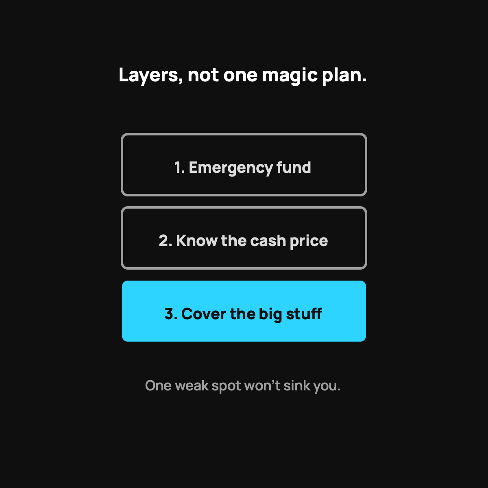

The DIY Healthcare Safety Net
You don't need one magic plan. You need a few simple layers that work together.
You don't need one magic product to protect your family from a health disaster. You need three layers: an emergency fund you can reach fast, the habit of asking for the cash price, and a real plan for the big stuff, whether that's insurance or health sharing. When you have layers, one weak spot doesn't sink you.

Here's a mindset that changed how I think about all of this. You don't need one magic product to protect your family from a health disaster. You need a few simple layers that work together. Firefighters don't rely on one thing, they've got the alarm, the extinguisher, and the exit plan. Your healthcare safety net can work the same way, and you can start building it today no matter what plan you're on.
Layer one: a real emergency fund
This is the floor everything else stands on. Cash you can reach fast, set aside only for "oh no" moments. Even a first $1,000 changes everything, because it turns a crisis into an inconvenience.
If you use health sharing, this is where your $500 event commitment lives, ready to go. If you're on insurance, this is what covers the deductible you'd owe before the plan helps. Either way, you want this cushion. Start small and keep feeding it.
Layer two: knowing the cash price
The single most expensive mistake in American healthcare is assuming the printed price is the real price. It usually isn't. The cash or self-pay price is often a fraction of the sticker, and you just have to ask for it. I wrote about why that gap exists, and how to negotiate a bill down yourself.
This layer costs you nothing but the willingness to ask. It's the highest return move in the whole net.
Layer three: a way to cover the big stuff
Layers one and two handle the small and medium bumps. But a true catastrophe, a long hospital stay, a major surgery, can blow past any emergency fund. That's what layer three is for.
For a lot of families, that's insurance. For a lot of other families, health sharing fills this slot at a lower monthly cost, where the community funds the big eligible bills after the advocates negotiate them down. The point isn't which one you pick. The point is that you consciously have something in this slot, instead of hoping nothing big ever happens.
Why layers beat one big product
When you lean on a single product, its gaps become your gaps. High deductible? That's on you. Denied claim? On you. But when you've got layers, one weak spot doesn't sink you. The emergency fund covers what the cash price doesn't, the cash price shrinks what the big coverage sees, and the big coverage catches what would've been a catastrophe.
That's resilience. It's boring, and boring is exactly what you want when you're sick and stressed.
The takeaway
Stop looking for the one perfect plan that solves everything. Build the net instead: an emergency fund you can reach, the habit of asking for the cash price, and a real plan for the big stuff. Start with whichever layer you're missing. Each one you add makes the whole thing stronger, and none of them require you to have it all figured out today.
Questions I get about this
What's the first layer to build?
A real emergency fund, even a first $1,000. It turns a crisis into an inconvenience. If you use health sharing, this is where your $500 event commitment lives. If you're on insurance, it's what covers the deductible before the plan helps. Start with the first $1,000.
Which layer has the highest return?
Knowing the cash price. The most expensive mistake in American healthcare is assuming the printed price is the real price. The cash price is often a fraction of the sticker, and it costs you nothing but the willingness to ask. Here's how.
Do I need insurance or health sharing for layer three?
You need something in that slot. A long hospital stay or major surgery can blow past any emergency fund. For a lot of families that's insurance. For others, health sharing fills it at a lower monthly cost. The point is choosing consciously instead of hoping nothing big happens.
Nothing here is medical, tax, or financial advice, just what I've learned building my own family's net. My family uses CrowdHealth, so I'll always flag when a post is a referral. This one isn't.

Written by David Dewese
Normal guy with a full-time job, wife, and kids. Spent twenty years pursuing music and creative ventures before starting a family. Sharing tips and tricks on how to thrive while living on an artist's income. Not a financial advisor. More about me.
New here?
Normaltown USA is plain-English money and healthcare help for normal people, written by a regular guy with a family of four. No jargon, no hype. Start here, or read the FAQ.